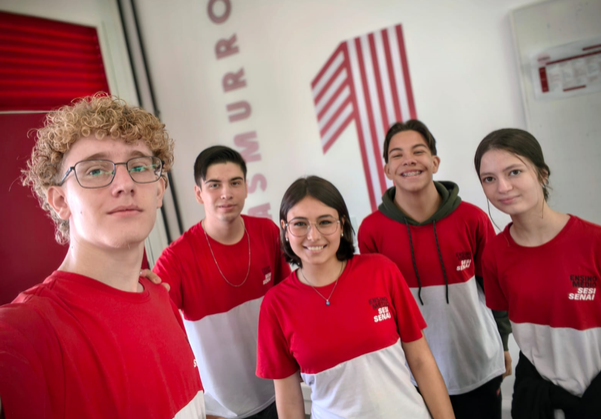

Prysma
Grupo de Desenvolvimento
Somos o grupo Prysma, alunos do 2º A do SESI C242 – Vinhedo. Este projeto nasceu do desejo de homenagear e dar visibilidade às mulheres que, todos os dias, constroem a história da nossa escola.
Integrantes:
- Maria Clara Fialho Trombetta — Líder
- Vitor Turatti de Mello — Vice-líder
- Matheus Kafka Favotto
- Isaac da Silva Campos
- Rebecka de Almeida Machado
“Mais do que uma atividade de desenvolvimento web, este projeto representa uma oportunidade de olhar para pessoas que fazem parte da rotina da escola e reconhecer a importância de suas histórias.”